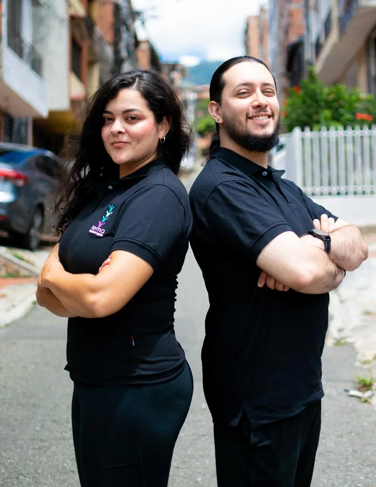

Dolor y movilidad
Valoración y orientación para recuperar movimiento y desenvolverte con más confianza.
Fisioterapia a domicilio en Valle de Aburrá
Acompañamiento fisioterapéutico cercano, con objetivos claros y ejercicios pensados para tu vida diaria.

Tu proceso, contigo
Cada persona parte de una historia distinta. Por eso, el primer paso es escucharte, entender tus actividades y acordar objetivos alcanzables junto con un profesional.
Cómo podemos acompañarte
Valoración y orientación para recuperar movimiento y desenvolverte con más confianza.
Un plan progresivo de ejercicio terapéutico ajustado a tu etapa y capacidad.
Sesiones en tu entorno para practicar movimientos relacionados con tu rutina.
Un comienzo sencillo
Comparte tu objetivo y la zona donde te encuentras.
Un profesional revisará la información y te orientará sobre el siguiente paso.
Si el servicio es adecuado, acordarán objetivos y disponibilidad.
Da el primer paso